MoC & Downturn LGD
Day 1
November 15, 2022
Introductions
Course Outline
Course outline
General topics
IRB Regulation
Risk Parameter Quantification
LGD Quantification
Margin of Conservatism
Deficiencies
Appropriate Adjustments
MoC Quantification
Downturn LGD
Downturn Identification
Downturn LGD Quantification
Day 1
13:00
13:30
14:15
15:00
15:15
16:00
16:45
Introduction
Overview of IRB Regulation
Risk Parameter Quantification
Break
LGD Quantification
Margin of Conservatism
Day Recap
Overview of IRB Regulation
Overview of IRB Regulation
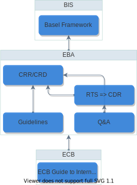Overview of IRB Regulation
Layers of regulation
- Basel Framework
- BIS recommendations on banking regulations
- CRR (Part 3/II, Chapter III)
- Capital Requirements Regulation (Internal Ratings Based Approach )
- RTS \(\rightarrow\) CDR
- Regulatory Technical Standards adopted as Comm. Del. Regulation
- EBA Guidelines and Q&A
- Clarification, specifications
- ECB Guide to Internal Models
- Supervisory expectations
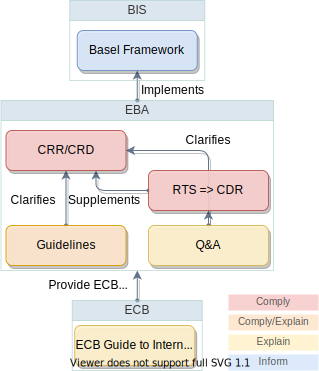
Overview of IRB Regulation
- RTS \(\rightarrow\) CDR
- Regulatory Technical Standards adopted as Comm. Del. Regulation
- CDR 2022/439 Assessment of IRB approach
- CDR 2021/930 Identification of economic downturn
- EBA Guidelines and Q&A
- Clarification, specifications
- EBA/GL/2017/16 PD & LGD estimation
- EBA/GL/2019/03 DT LGD estimation
- EBA/GL/2020/05 Credit Risk Mitigation (CRM)
Example 1: Economic Downturn
- Economic Downturn not specified in Basel Framework or CRR
- EBA has drafted an RTS, elevated into regulation CDR 2021/930
- EGIM is not more specific
CRE 36.85
\(\small{[\cdots]}\) A bank must estimate an LGD for each facility that aims to reflect economic downturn conditions where necessary to capture the relevant risks. \(\small{[\cdots]}\)
CRR Article 181
(1)(b) institutions shall use LGD estimates that are appropriate for an economic downturn if those are more conservative than the long-run average. \(\small{[\cdots]}\)
(3) EBA shall develop draft regulatory technical standards to specify the following: (a) the nature, severity and duration of an economic downturn referred to in paragraph 1; \(\small{[\cdots]}\)
CDR 2021/930 Article 1
Specification of the nature, severity and duration of an economic downturn \(\small{[\cdots]}\)
Example 2: Type of exposures
- Basel vaguely refers to concept
- CRR sets out general principles
- EBA GL on PD&LGD specifies these
CRE 36.10
Within each asset class, a bank may utilise multiple rating methodologies/systems. For example, a bank may have customised rating systems for specific industries or market segments (eg middle market, and large corporate). \(\small{[\cdots]}\) the rationale for assigning a borrower to a rating system \(\small{[\cdots]}\) reflects the level of risk of the borrower. \(\small{[\cdots]}\)
CRR Article 142(1)
(1) “rating system” means all of the methods, processes, controls, data collection and IT systems that support the \(\small{[\cdots]}\) quantification of default and loss estimates that have been developed for a certain type of exposures;
(2) “type of exposures” means a group of homogeneously managed exposures which are formed by a certain type of facilities and which may be limited to a single entity \(\small{[\cdots]}\) provided that the same type of exposures is managed differently in other entities of the group;
EBA/GL/2017/16
12. A rating system \(\small{[\cdots]}\) should cover all those exposures where the obligors or facilities show common drivers of risk and credit-worthiness and fundamentally comparable availability of credit-related information. \(\small{[\cdots]}\)
13. Exposures covered by the same rating system should be treated similarly by the institution in terms of risk management, decision making and credit approval process and should be assigned to a common obligor rating scale \(\small{[\cdots]}\)
Rating Systems
- Rating System
- assessment methods & processes developed for a certain type of exposures
- Type of Exposures
- homogeneously managed, comparable risk characteristics
- Range of Application
- all exposures of the type in scope of the rating system
- Calibration Segment
- level of risk quantification \(\subset\) scope of application
- Ranking method
- Risk differentiation model
- Grades/Pools
- Exposures with similar risk profiles
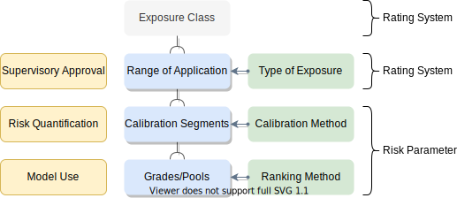
CRR Article 142
(1) “rating system” means all of the methods, processes, controls, data collection and IT systems that support the assessment of credit risk, the assignment of exposures to rating grades or pools, and the quantification of default and loss estimates that have been developed for a certain type of exposures; \(\small{[\cdots]}\)
Rating Systems
- Rating System
- assessment methods & processes developed for a certain type of exposures
- Type of Exposures
- homogeneously managed, comparable risk characteristics
- Range of Application
- all exposures of the type in scope of the rating system
- Calibration Segment
- level of risk quantification \(\subset\) scope of application
- Ranking method
- Risk differentiation model
- Grades/Pools
- Exposures with similar risk profiles
CRR Article 142
“type of exposures” means a group of homogeneously managed exposures which are formed by a certain type of facilities \(\small{[\cdots]}\)
Rating Systems
- Rating System
- assessment methods & processes developed for a certain type of exposures
- Type of Exposures
- homogeneously managed, comparable risk characteristics
- Range of Application
- all exposures of the type in scope of the rating system
- Calibration Segment
- level of risk quantification \(\subset\) scope of application
- Ranking method
- Risk differentiation model
- Grades/Pools
- Exposures with similar risk profiles
EBA/GL/2017/16 par. 12
A rating system in the sense of point (1) of Article 142(1) of Regulation (EU) No 575/2013 should cover all those exposures where the obligors or facilities show common drivers of risk and credit-worthiness and fundamentally comparable availability of credit-related information. \(\small{[\cdots]}\)
Rating Systems
- Rating System
- assessment methods & processes developed for a certain type of exposures
- Type of Exposures
- homogeneously managed, comparable risk characteristics
- Range of Application
- all exposures of the type in scope of the rating system
- Calibration Segment
- level of risk quantification \(\subset\) scope of application
- Ranking method
- Risk differentiation model
- Grades/Pools
- Exposures with similar risk profiles
EBA/GL/2017/16 par. 13
Exposures covered by the same rating system should be treated similarly by the institution in terms of risk management, decision making and credit approval process and should be assigned to a common obligor rating scale \(\small{[\cdots]}\)
Example: two rating systems
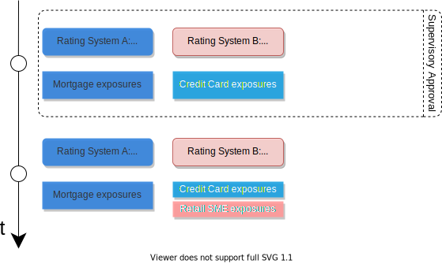
Not based on exposure characteristics!
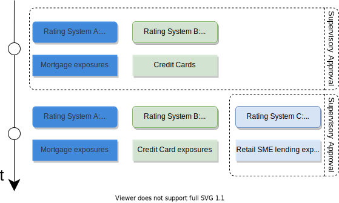
Rating Systems
- Rating System
- assessment methods & processes developed for a certain type of exposures
- Type of Exposures
- homogeneously managed, comparable risk characteristics
- Range of Application
- all exposures of the type in scope of the rating system
- Calibration Segment
- level of risk quantification \(\subset\) scope of application
- Ranking method
- Risk differentiation model
- Grades/Pools
- Exposures with similar risk profiles
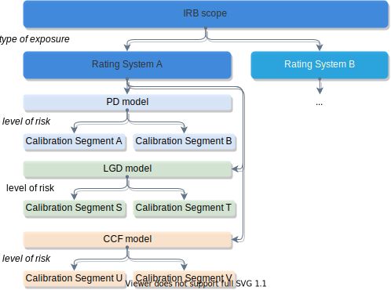
EBA/GL/2017/16
12. \(\small{[\cdots]}\) The PD and LGD model within a rating system may comprise various calibration segments.\(\small{[\cdots]}\)
IRB implementation
Implementation
- IRB roll-out per exposure class
- 3 years experience test
- Risk Parameter Estimation
- Submission per rating system
Review
- Regular review of estimates
- Conservative Adjustments
Change
- Outcome of review
- Changes to range of application
- Submission of change
Reversion
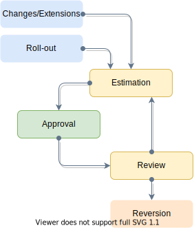
Risk Parameter Estimation
- Indirect estimation
- risk quantification conditional on risk differentiation
- Risk Differentiation
- differentiate and rank exposures on (internal) risk measure
- Risk Quantification
- Quantify risk parameter estimates; calibration to long-run or downturn estimates and MoC
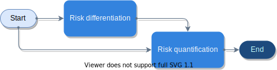
Risk Parameter Estimation
- Indirect estimation
- risk quantification conditional on risk differentiation
- Risk Differentiation
- differentiate and rank exposures on risk measure
- Typical approach: \(\sim\) into-default / realized LGD closed cases / realized CCF
- Conditional on risk drivers, based on data set representative of application portfolio
- Regulatory requirements focus on meaningful differentiation
- Risk Quantification
- Quantify risk parameter estimates; calibration to long-run or downturn estimates and MoC
Risk Parameter Estimation
- Indirect estimation
- risk quantification conditional on risk differentiation
- Risk Differentiation
- differentiate and rank exposures on risk measure
- Risk Quantification
- Quantify risk parameter estimates; calibration to long-run or downturn estimates and MoC
- Estimates of long-run default/loss experience
- Regulatory requirements focus on calculation method and quantification process
Risk Parameter Estimation
- Indirect estimation
- risk quantification conditional on risk differentiation
- Direct estimation: special case
- Continuous estimation: effectively same requirements, materal
- Risk Differentiation
- differentiate and rank exposures on risk measure
- Risk Quantification
- Quantify risk parameter estimates; calibration to long-run or downturn estimates and MoC
CRR Article 169
3. Where an institution uses direct estimates of risk parameters for individual obligors or exposures these may be seen as estimates assigned to grades on a continuous rating scale.
Risk Parameter Quantification
Risk Parameter Quantification
- Reference dates
- Date to which realised values are aggregated
- Calibration Target
- long-run average (LRA) default rate, (LRA/DT) LGD, CCF calculated based on RDS prior to adjustments
- Appropriate Adjustment
- Modeled effect on CT of drivers of non-representativeness & other sources of bias
- Appropriately Adjusted Calibration Target
- Calibration Target adjusted for biases
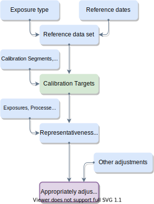
Reference Data Sets
- Length of historical period
- min. requirements (5 or 7 yr) + available relevant internal data on comparable exposures
- Reference date methodology
- (non-)overlapping [PD], time-to-default [LGD, CCF], recovery process [in-default]
- Exposure attributes
- identify exposures of given type at historical observation dates
- Default/loss characteristics
- Observed default/loss data aggregated by exposure over observation period at reference date (target variable)
- Risk characteristics
- Risk drivers, appropriate adjustment variables
- Observation windows
- aggregate to obtain targets (fwd) or variables (bwd)
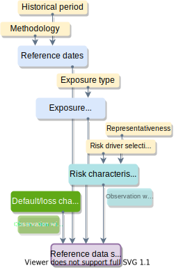
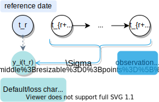
Realised Risk Parameter Values
- Reference date methodology
- (non-)overlapping [PD], time-to-default [LGD, CCF], time-in-default/recovery process [in-default]
- Reference dates \(t_r\)
- set of dates over which calibration target is calculated, either as an average (LRA LGD), average of yearly averages (PD & LRA CCF), or an estimated downturn effect (DT LGD/CCF)
- Default/Loss characteristics
- exposure-level into-default flag, (partially) realised LGD values, realised credit conversion factors, intermediate components
Calibration Targets
- Length of historical period
- reflecting variability of economic conditions
- Methodology
- overlapping versus non-overlapping
- Reference dates \(t_{r}\)
- Sample over historical data representative of application portfolio conditioned on target
- Calibration level (L)
- level of aggregation (range of appl. \(\supseteq\) calibration segment \(\supset\) grade/pool)
- Calibration target
- Prescribed estimator of LRA/DT risk parameter values: (adjusted/weighted) average of realised risk parameter values
Calibration Targets (PD)
- Length of historical period
- (up to) a length that reflects the likely range of variability of default rates of that type of exposures
- Reference date methodology
- overlapping versus non-overlapping
- Reference dates \(t_{r}\)
- sample over historical data over observation dates of performing exposures
- Calibration level (L)
- level of aggregation (range of appl. \(\supseteq\) calibration segment \(\supset\) grade/pool)
- Calibration target \(DR\)
- average of default rates per (yearly) reference date
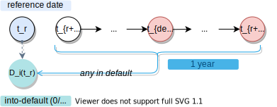
\(\text{DR}(\mathbf{L}) = \frac{1}{R}\sum_{r=1\dots R}\frac{1}{N_\mathbf{L}(t_r)}\sum_{i\in\mathbf{L}} D_i(t_r)\)
LGD Quantification
Long-run average LGD calculation
- Length of historical period
- all available internal loss data on exposures of that type considered relevant
- Reference dates \(t_r\)
- \(t_{def}-12 \le t_{r} < t_{def}\)
- (assignment to grade)
- Realised LGD
- Ratio of economic loss to outstanding at default
- Observed Average LGD
- Average realised LGD of closed recovery processes
- Long-run Average LGD
- Average RLGD of closed+open recoveries
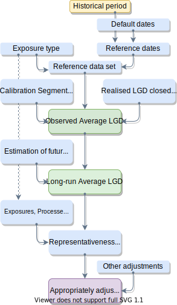
Long-run average LGD calculation
- Identify open/closed recoveries
- Maximum Recovery Period & Multiple default treatment
- Realised LGD
- Calculate realized LGD for each closed recovery
- Observed Average LGD
- Calculate average realised LGD of closed recovery processes
- Future recoveries
- Estimate future recoveries on incomplete workouts
- Long-run Average LGD
- Calculate average LGD of closed + open recoveries
Realised LGD
- Outstanding (O)
- Credit obligation outstanding at \(t_{def}\)
- Additional drawings (A)
- Drawings after \(t_{def}\)
- Recoveries (R)
- Discounted cash flows from any recoveries and payments
- Costs (C)
- Direct or material indirect costs of recovery
\(RLGD = \frac{\max(O+A+C-R,0)}{O}\)
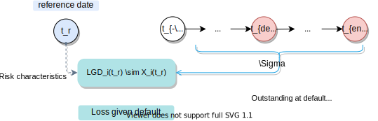
Aggregation is over all cash flows related to recovery of defaulted credit obligation.
Realised LGD (in-default)
- Outstanding (O)
- Credit obligation outstanding at \(t_{\mathbf{ref}}\)
- Additional drawings (A)
- Drawings after \(t_{\mathbf{ref}}\)
- Recoveries (R)
- Discounted cash flows from any recoveries and payments after \(t_{\mathbf{ref}}\)
- Costs (C)
- Direct or material indirect costs of recovery after \(t_{\mathbf{ref}}\)
\(RLGD = \frac{\max(O+A+C-R,0)}{O}\) 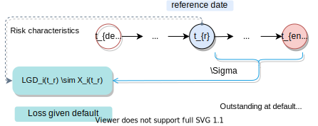
Realised LGD
- Outstanding (O)
- Credit obligation outstanding at \(t_{def}\)
- irrespective of prior write-offs or forgiveness
- excluding fees/payments not capitalised at \(t_{def}\)
- (additional drawings after default, if reflected in CCF)
- Additional drawings (A)
- Drawings after \(t_{def}\)
- Recoveries (R)
- Discounted cash flows from any recoveries and payments
- Costs (C)
- Direct or material indirect costs of recovery
\[ RLGD = \frac{\max(O+A+C-R,0)}{O} \]
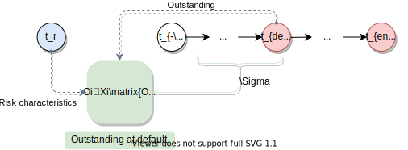
Realised LGD
- Outstanding (O)
- Credit obligation outstanding at \(t_{def}\)
- Additional drawings (A)
- Drawings after \(t_{def}\)
- Recoveries (R)
- Discounted cash flows from any recoveries and payments
- Unsecured as well as secured (eligible+ineligible)
- Including regular contractual payments
- Including discounted outstanding at default end in case of return to performing (“artificial cash flow”)
- Costs (C)
- Direct or material indirect costs of recovery
\[ RLGD = \frac{\max(O+A+C-R,0)}{O} \]
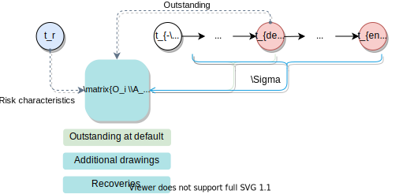
Realised LGD
- Outstanding (O)
- Credit obligation outstanding at \(t_{def}\)
- Additional drawings (A)
- Drawings after \(t_{def}\)
- Recoveries (R)
- Discounted cash flows from any recoveries and payments
- Costs (C)
- Direct or material indirect costs of recovery
- all direct costs of recovery discounted to \(t_{def}\)
- (material) indirect costs allocated to recovery process \(i\)
\[ RLGD = \frac{\max(O+A+C-R,0)}{O} \]
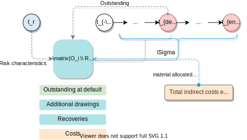
Realised LGD: example 1
- Interest-only loan of EUR 100, interest EUR 5 / month
- Stops paying at \(t=t_{def} - 3 \text{ months}\)
- Customer declared in default on loan at \(t=t_{def}\)
- Untraceable, local P.I. charges EUR 50 (\(t=t_{def}+6\text{ months}\))
- 100% writtten off at \(t_{def}+12\text{ months}\)
- Euribor 3 month = 0%
What is the realized LGD?
\[\frac{100+15+\frac{50}{(105\%)^6}}{100+15} \approx 132\%\]
Realised LGD: example 2
- Loan of EUR 100 at \(t_{def}\), interest EUR 5 / month, linear amortizing at 1 / month
- Customer declared in default on loan at \(t=t_{def}\), keeps paying bills
- Returned to performing at \(t=t_{def} + 6 \text{ months}\)
- Euribor 3 month = 1%
What is the realized LGD?
\[\frac{100 - \sum_{t=1}^{6}\frac{5+1}{106\%^i} - \frac{94}{106\%^6}}{100} \approx 4\%\]
Long-run average LGD calculation
- Identify open/closed recoveries
- Maximum Recovery Period & Multiple default treatment
- Realised LGD
- Calculate realized LGD for each closed recovery
- Observed Average LGD
- Calculate average realised LGD of closed recovery processes
- Future recoveries
- Estimate future recoveries on incomplete workouts
- Long-run Average LGD
- Calculate average LGD of closed + open recoveries
Observed Average LGD
Default-weighted1 average of realised LGD, including
- closed recoveries
- recoveries where \(t_{end} - t_{def} > \text{MRP}\)
- repaid/written-off exposures
- exposures returned to performing status (“cured”)
Important decision: maximum recovery period (\(\S\) 156 EBA/GL/2017/16)
- per type of exposure
- vast majority of recoveries realized, based on observed recovery patterns
Long-run average LGD calculation
- Identify open/closed recoveries
- Maximum Recovery Period & Multiple default treatment
- Realised LGD
- Calculate realized LGD for each closed recovery
- Observed Average LGD
- Calculate average realised LGD of closed recovery processes
- Future recoveries
- Estimate future recoveries on incomplete workouts
- Long-run Average LGD
- Calculate average LGD of closed + open recoveries
Future recoveries
\(\S\) 158-159 EBA/GL/2017/16
- Realised LGD on closed recovery processes right-censored
- Censoring bias is time-in-default dependent
- Calibration target should be adjusted for bias by estimating future recoveries
Approaches
- At individual exposure or aggregated level
- Based on case-by-case assessments / provisions
- Imputation with in-default LGD estimates
- Joint estimation
Long-run average LGD calculation
- Identify open/closed recoveries
- Maximum Recovery Period & Multiple default treatment
- Realised LGD
- Calculate realized LGD for each closed recovery
- Observed Average LGD
- Calculate average realised LGD of closed recovery processes
- Future recoveries
- Estimate future recoveries on incomplete workouts
- Long-run Average LGD
- Calculate average LGD of closed + open recoveries
Calibration Targets (LGD)
- Length of historical period
- at least 5/7 years, all internal data considered relevant
- Reference date methodology
- time-to-default (performing), time-in-default (in-default)
- Reference dates \(t_{r}\)
- sample over historical data over observation dates of defaulted exposures
- Calibration level (L)
- level of aggregation (range of appl. \(\supseteq\) calibration segment \(\supset\) grade/pool)
- Calibration target \(\text{LRA-LGD}\)
- default-weighted average over LGD values, both realised and based on estimated future recoveries (RLGD)
\(\text{LRA-LGD}(\mathbf{L}) = \frac{1}{N_\mathbf{L}}\sum_{i\in\mathbf{L}} \text{RLGD}_i\)
Margin of Conservatism
Margin of Conservatism
- Basel framework and CRR prescribe a Margin of Conservatism in general terms only
- EBA Guidelines on PD & LGD more specific
- Specification and clarification of concept
- Prescribes additional steps in risk quantification (appropriate adjustments)
- Introduces (harmonizing) minimal requirements (MoC A, B, C>0)
CRE 36.67
In general, estimates of PDs, LGDs, and EADs are likely to involve unpredictable errors. In order to avoid over-optimism, a bank must add to its estimates a margin of conservatism that is related to the likely range of errors. Where methods and data are less satisfactory and the likely range of errors is larger, the margin of conservatism must be larger.
CRR Article 179(f)
An institution shall add to its estimates a margin of conservatism that is related to the expected range of estimation errors. Where methods and data are considered to be less satisfactory, the expected range of errors is larger, the margin of conservatism shall be larger.
EBA/GL/2017/16
43. In order to quantify MoC institutions should do all of the following: (a) quantify MoC for the identified deficiencies \(\small{[\cdots]}\) ensuring that: (i) where appropriate adjustments \(\small{[\cdots]}\) are used, the MoC accounts for any increase in the uncertainty \(\small{[\cdots]}\) (b) quantify the general estimation error \(\small{[\cdots]}\)
Margin of Conservatism
- EBA Guidelines on PD & LGD more specific
- Specification and clarification of concept
- Prescribes additional steps in risk quantification (appropriate adjustments)
- Introduces (harmonizing) minimal requirements (MoC A, B, C>0 factorization)
EBA/GL/2017/16
41. \(\small{[\cdots]}\)institutions should implement a framework for quantification, documentation and monitoring of estimation errors \(\small{[\cdots]}\)
42. The final MoC on a risk parameter estimate should reflect the uncertainty of the estimation in all of the following categories:
Category A: \(\small{[\cdots]}\)data and methodological deficiencies
Category B: \(\small{[\cdots]}\)changes to underwriting standards, risk appetite,collection and recovery policies and any other \(\small{[\cdots]}\)
Category C: the general estimation error.
43. In order to quantify MoC institutions should do all of the following: (a) quantify MoC for the identified deficiencies \(\small{[\cdots]}\) ensuring that: (i) where appropriate adjustments \(\small{[\cdots]}\) are used, the MoC accounts for any increase in the uncertainty \(\small{[\cdots]}\) (b) quantify the general estimation error \(\small{[\cdots]}\)
Margin of Conservatism
Capital requirements based on unexpected losses:
\[\text{RWA} \sim \int^{\alpha} \text{Loss}(x)p(x) \text{d}x\]
Loss distribution assumed factorized over risk parameters and exposures \(i\):
\[p(\mathbf{x}) = \prod_i p_\text{PD}(x_i) p_\text{LGD}(x_i) p_\text{EAD}(x_i)\]
Risk parameter densities based on estimated parameters \(r\):
\[p_{\text{R}}(x_i) \sim p_\text{R}(x_i|r)p(r|\text{data})\]
Therefore, $ ^{} {}(x)p(x|r)p(r) x r {}(x)p(x|r=F_r{-1}(^{})) x $
\(\alpha\) : risk appetite
\(\alpha^\prime\) : “model risk” appetite
Risk & Uncertainty
Bob
- High-wealth client with excellent lawyers
- Has nuclear decay detector experiment in basement
- 50% full loss/repayment by guaranteed fair quantum coin toss
Elmo
- Lending/recovery via Pandimensional Originator LLC
- Random entity picked from across space-time
- May have concept of money/time
- Who would you rather lend to?
- How much capital should you hold in either case?
Risk & Uncertainty
Bob
Elmo
- Who would you rather lend to?
- How much capital should you hold in either case?
\[D\sim \text{Bernoulli}(p)\] \[E\lbrack p_{Bob} \rbrack = E\lbrack p_{Elmo} \rbrack=50\% \]
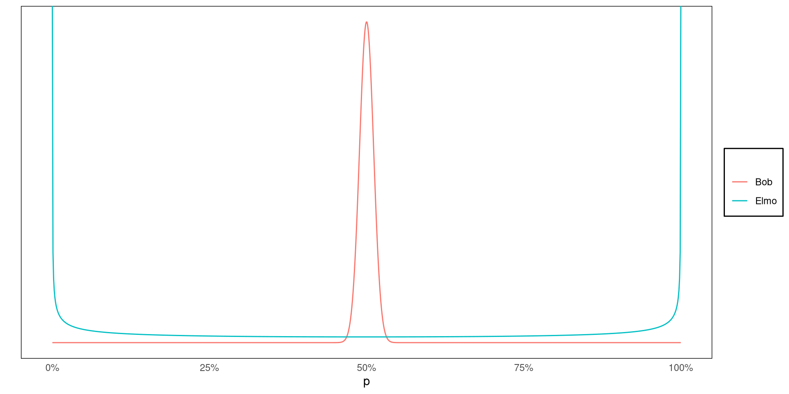MoC Quantification
- Initial Calibration Target (CT)
- long-run average (LRA) default rate, (LRA/DT) LGD, CCF calculated estimated based on RDS prior to adjustments
- MoC C
- Margin to account for statistical uncertainty of calibration target estimate in the absence of potential biases due to deficiencies
- Deficiency
- Source of bias relative to initial calibration target
- Appropriately adjusted calibration target
- Calibration target adjusted for biases due to deficiencies
- MoC B
- Margin to account for additional uncertainty due to adjustment for non-representativeness
- MoC A
- Margin to account for other deficiencies
End of day 1
Day 2
13:00
13:30
14:15
15:00
15:15
16:00
16:45
Quiz & Recap
General Estimation Error
Deficiencies
Break
Appropriate Adjustments
Additional Uncertainties
Case Study Explanation